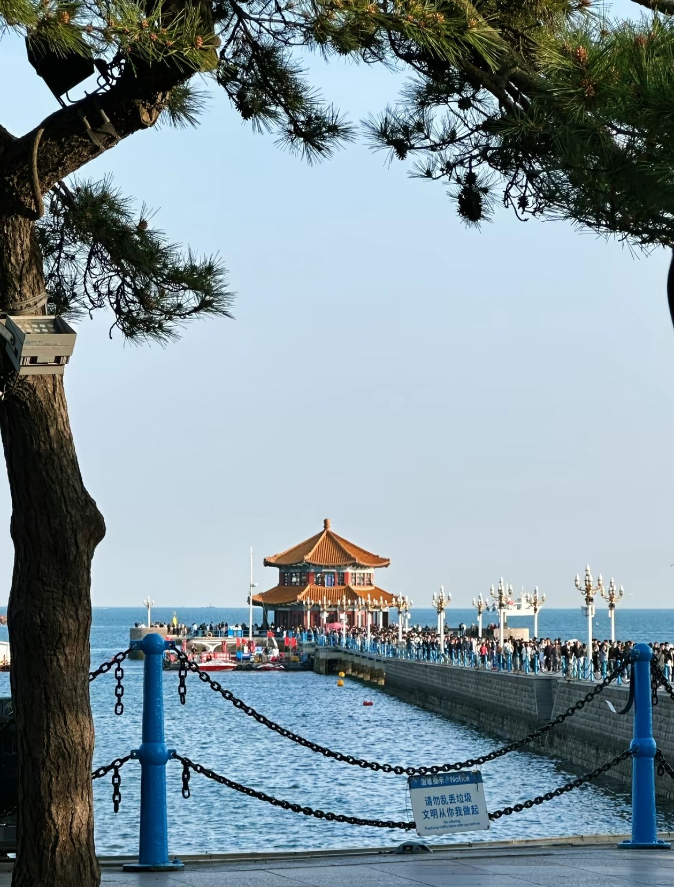
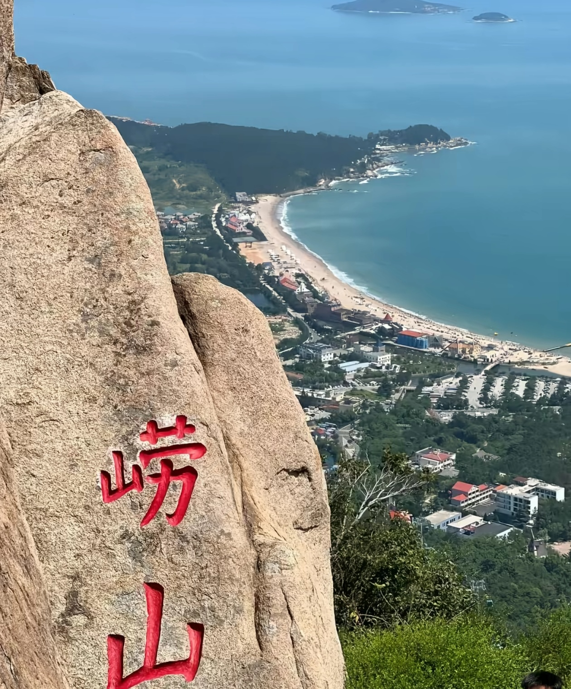
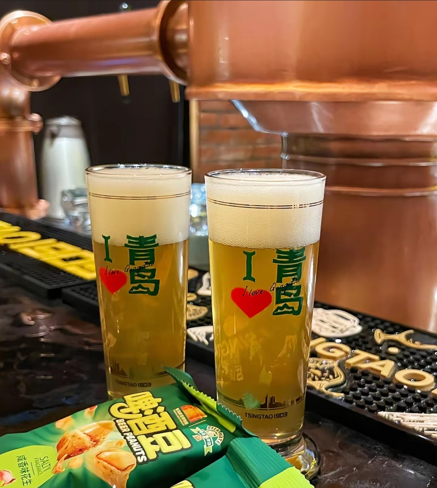
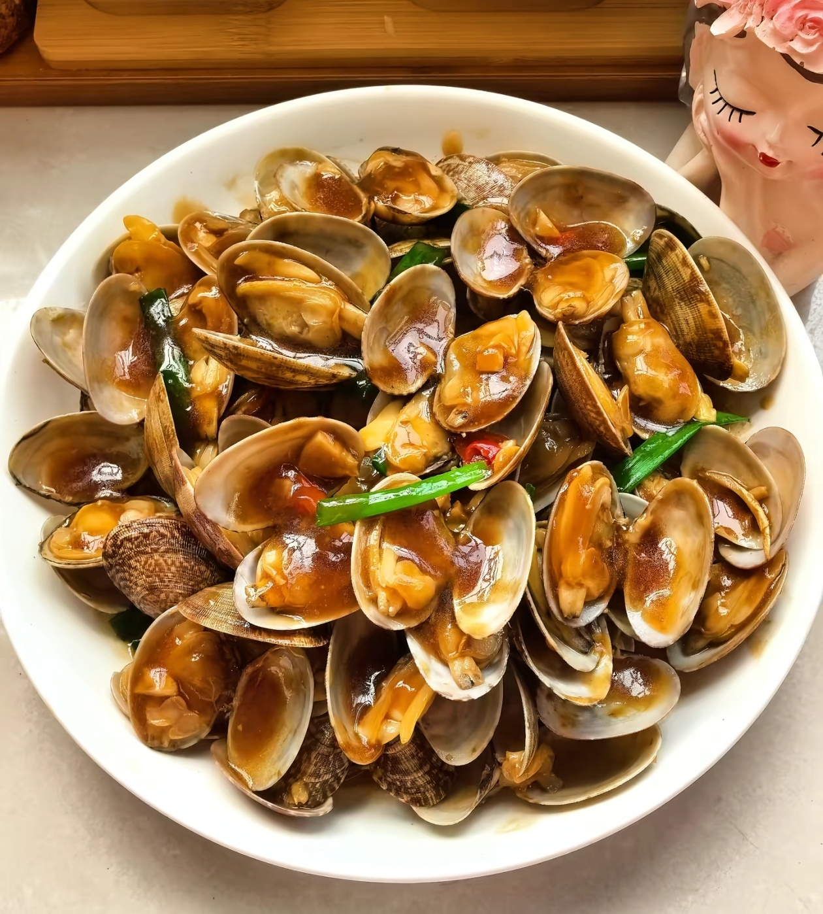
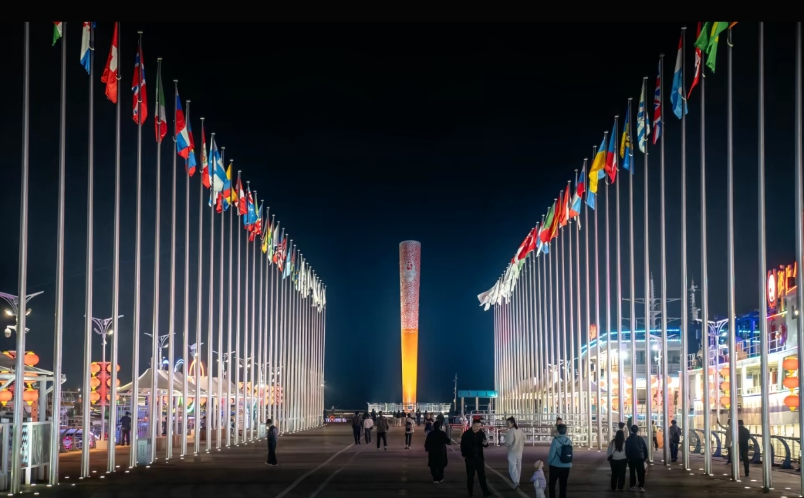
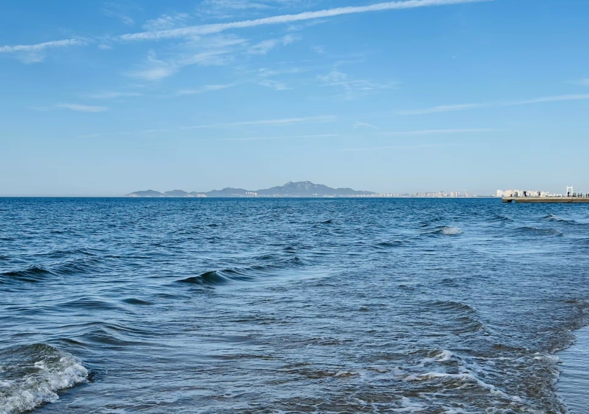

A CITY BY THE SEA
山海相拥的青岛
青岛坐落在山东半岛南部，海湾、山峦与老街巷交织出独特的城市风景。清晨可以沿海看日出，午后漫步红瓦绿树之间，傍晚再去尝一口鲜美的海味——这就是我熟悉又喜欢的家乡。
📸 景点介绍

海湾漫步
栈桥
伸向海中的长桥是青岛熟悉的地标。沿着木栈道慢慢走，看海鸥掠过海面，也能远望回澜阁。

山海胜境
崂山
崂山面海而立，山石、松林与云雾构成清朗的山海景致。登高远眺，青峰与大海尽收眼底。
🍽️ 青岛味道

畅饮
青岛啤酒
百年酿造工艺，泡沫细腻，麦香浓郁。配上烧烤，是青岛夏夜最地道的打开方式。

鲜味
辣炒蛤蜊
红岛蛤蜊皮薄肉嫩，配以干辣椒爆炒，鲜辣开胃，是青岛人餐桌上的常客。
🎡 青岛娱乐项目

海上运动
奥帆中心帆船体验
在2008年奥运会帆船比赛场地，亲自体验驾驭帆船的乐趣，感受海风与浪花。

休闲度假
金沙滩
沙质细腻，色泽如金。这里不仅是游泳胜地，更是举办沙滩音乐节和啤酒节的热门场地。